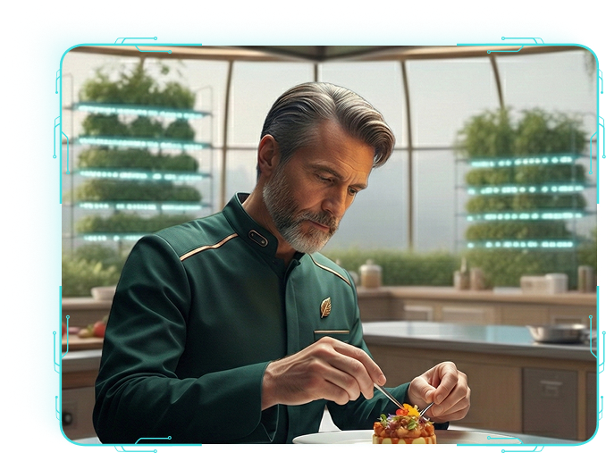

Il nostro team

Kaelen Ross
Bio-Sommelier
Eden Leaf non è semplicemente un luogo dove mangiare, ma un laboratorio vivente di coesistenza. Siamo l'avanguardia della gastronomia rigenerativa: un rifugio di vetro e acciaio integrato nella biologia dell’Albero Maestro, dove dimostriamo ogni giorno che il lusso più elevato è quello che collabora con la natura, anziché dominarla.
Nato nel secolo scorso come progetto sperimentale di bio-architettura, Eden Leaf è cresciuto organicamente insieme alla sua struttura ospitante. Abbiamo progettato la nostra cupola per adattarsi gentilmente all'espansione della Foglia Madre, trasformando quella che era una visione utopica di sostenibilità urbana nella realtà gastronomica più esclusiva ed etica del panorama mondiale.

Julio Vane è il nostro ingegnere del gusto. Con un background ibrido tra alta cucina molecolare e botanica applicata, Vane crea piatti che sono estensioni commestibili dell'ambiente circostante. La sua filosofia è intervenire il meno possibile sulla materia prima, usando tecnologie laser e a ultrasuoni per estrarre sapori puri senza alterare l'anima dell'ingrediente.
Kaelen Ross